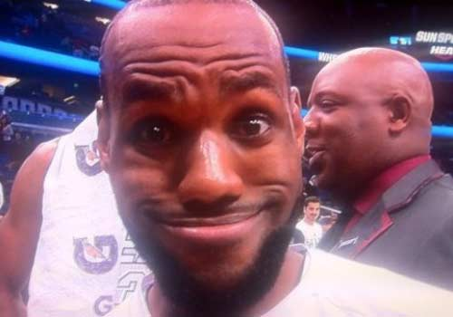

Hello everyone! My name is Mario(Yes, just believe your eyes! The picture is me)! I'm from Shaanxi province, China. Now I'm studing in Shanghai Jiao Tong University for my master degree. My major is communication engineering, which mainly focuses on physical layer algorithm and MAC layer protocol design. However, my interest is in mobile development, because I think it's fun, especially when you implement something cool!
I have a lot of hobbies, such as playing basketball and listening to music. My favourite basketball player is Lebron James, whose nickname is "the King". As you can see, my icon for GitHub account is a picture of James(Although it's a funny one).
My favourite singer is Chen Yeeching, whose English name is Cheer. She has a beautiful voice and her songs are always warm, I really love her!
This is the first mobile web page I have ever made. I hope it will display normally on your phones! :)